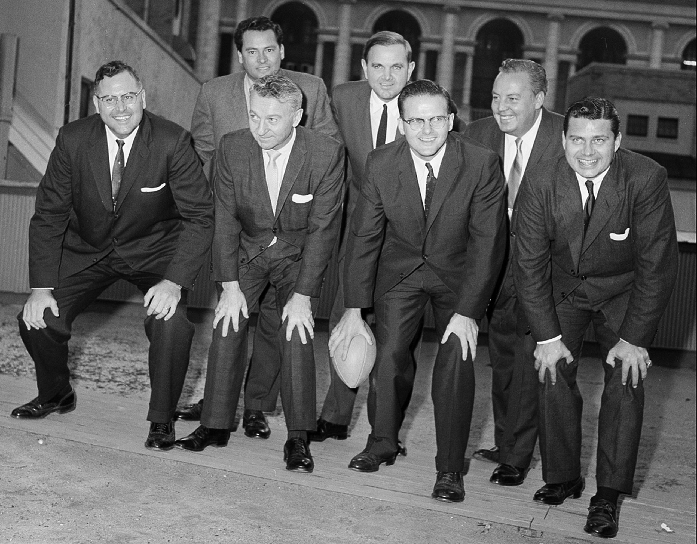
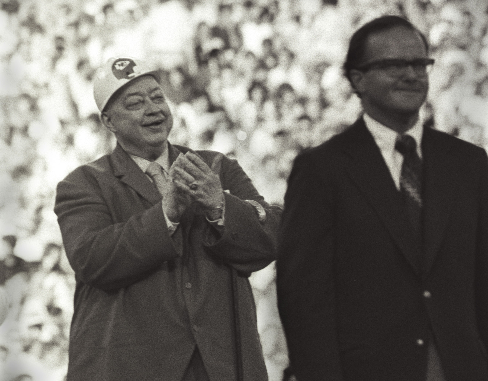
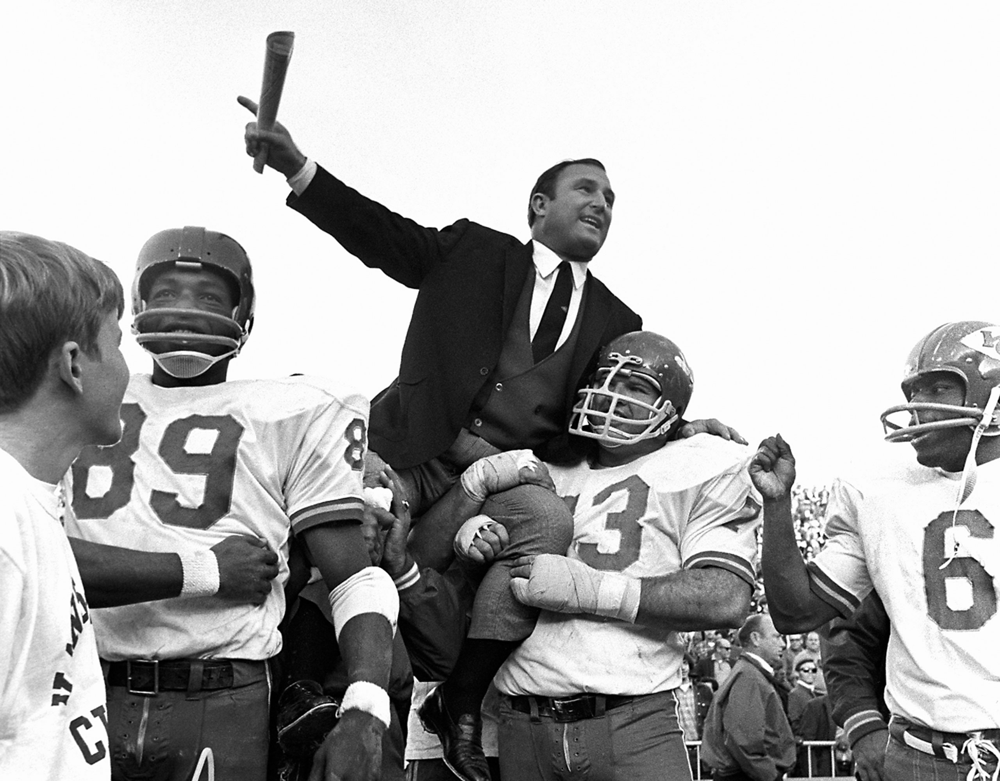
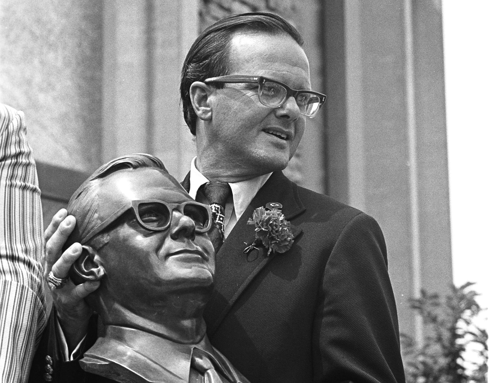

La liga reprendió los esfuerzos de Lamar Hunt para adquirir una franquicia de expansión de la NFL para su ciudad natal de Dallas. Sin embargo, su deseo de asegurar una franquicia de fútbol profesional se intensificó aún más después de ver el histórico Juego de Campeonato de la NFL '58 entre Baltimore y los Gigantes de Nueva York.
1959
Después de que se rechazó otro intento de obtener una franquicia de expansión de la NFL para Dallas, los funcionarios de la NFL sugirieron que Hunt contactara a la familia Wolfner, propietarios de la franquicia de los Chicago Cardinals. Violet Bidwell Wolfner, madre del actual propietario de los Cardinals, William Bidwell, y su esposo Walter finalmente acordaron vender a Hunt el 20 por ciento de la franquicia de los Cardinals. Hunt rechazó la oportunidad. Luego concibió el concepto de formar una segunda liga. "¿Por qué no funcionaría una segunda liga?", Recordó Hunt. "Había una liga estadounidense y nacional en el béisbol, ¿por qué no el fútbol?" Hunt contactó a otras personas que habían expresado interés en la franquicia de los Cardinals: Bud Adams (Houston), Bob Howsam (Denver), Max Winter y Bill Boyer (Minneapolis), y estimó su interés en formar una segunda liga. Adams se inscribió rápidamente y la liga joven, aunque todavía estaba en sus etapas iniciales, ya tenía su primera rivalidad.
Con cuatro equipos en las filas, incluida la franquicia de Hunt en Dallas, buscó franquicias en Nueva York y Los Ángeles. Antes de asegurar la propiedad en esas ciudades, Hunt buscó la bendición de la NFL para su esfuerzo, con la esperanza de que el comisionado de la NFL, Bert Bell, supervisara ambas ligas. "Me dije a mí mismo que no quería entrar en esto si eso significaba algún tipo de batalla", recordó Hunt. "Por supuesto, este fue uno de los pensamientos más ingenuos en la historia de los deportes profesionales". Aunque la NFL no quería formar parte de la nueva liga de Hunt, Hunt dio su bendición para que Bell lo mencionara en el curso de su testimonio ante un comité del Congreso el 28 de julio. "En ese momento, nadie había pagado un centavo y no tenía compromisos de Nueva York o Los Ángeles", continuó Hunt. "Pero Bert Bell lo había anunciado. Estábamos en el negocio". En cuestión de semanas, Barron Hilton (Los Ángeles) y Harry Wismer (Nueva York) acordaron ingresar a la liga de seis equipos. El 14 de agosto, la primera reunión de la nueva liga se celebró en Chicago. Se emitieron membresías chárter a seis ciudades originales: Dallas, Nueva York, Houston, Denver, Los Ángeles y Minneapolis. La liga fue bautizada oficialmente como la Liga de Fútbol Americano el 22 de agosto. Ralph Wilson (Buffalo) amplió la séptima franquicia de la liga el 28 de octubre y William Sullivan (Boston) se convirtió en el octavo propietario de la liga el 22 de noviembre, fecha del primer draft de la AFL, que duró 33 rondas. Los ocho propietarios originales acordaron contribuir con $ 25,000 y publicar una fianza de rendimiento de $ 100,000. "Antes de que hubiera un jugador, entrenador o gerente general en la liga, estaba Lamar Hunt", dijo Sullivan. "Hunt fue la piedra angular, la integridad de la liga. Sin él, no habría habido AFL".
En noviembre, la liga casi se disolvió antes de jugar un solo juego. Winter anunció que se retiraría de la liga para aceptar una franquicia de la NFL para Minneapolis. La NFL ahora también preveía una franquicia de expansión para Dallas, pero Hunt rechazó esa oferta. "(La AFL) fue muy importante para mí", dijo Hunt. "Tenía mucho dinero en él, mucho invertido en él. Emocionalmente, dediqué mucho tiempo, esfuerzo y energía. Sentí una obligación. Un tipo como Billy Sullivan tenía todo lo que tenía en él. "Ha sido lo correcto".
La AFL avanzó como el ex héroe de la Segunda Guerra Mundial y el gobernador de dos períodos de Dakota del Sur Joe Foss fue nombrado comisionado el 30 de noviembre. El 2 de diciembre se realizó un segundo draft de 20 rondas de la AFL. Hunt persiguió al legendario entrenador de la Universidad de Oklahoma, Bud Wilkinson, y al asistente defensivo de los Gigantes de Nueva York, Tom Landry, para dirigir su franquicia de los Texans. Wilkinson optó por quedarse en Oklahoma, mientras que Landry estaba destinado a entrenar a la franquicia de la NFL en Dallas. Hunt se decidió por un entrenador asistente relativamente desconocido de la Universidad de Miami (Florida), Hank Stram. "Una de las principales razones por las que contraté a Hank fue porque realmente quería el trabajo", explicó Hunt. "Resultó ser una selección muy afortunada de mi parte".

1960
Hunt fue elegido presidente de la AFL el 26 de enero. Minneapolis se retiró oficialmente de la AFL el 27 de enero. Un grupo propietario de Dallas recibió una franquicia de expansión de la NFL el 28 de enero para comenzar a jugar esa temporada en competencia directa con los tejanos. Ese mismo día, los propietarios de AFL aprobaron la regla de conversión de dos puntos que se utilizó para la existencia de 10 años de la AFL, una regla que no resurgiría en la NFL por 34 años más. El 30 de enero, Oakland reemplazó a Minneapolis como el octavo puesto avanzado de la AFL. En otro giro irónico, la franquicia de los Chicago Cardinals que Hunt había intentado comprar un año antes recibió el permiso de la NFL para transferirse a St. Louis el 13 de marzo. Quizás el momento más importante en los años formativos de la AFL llegó el 9 de junio, cuando la liga firmó un contrato televisivo de cinco años con ABC que pagó a cada club $ 112,000 durante la temporada '60.
Los tejanos establecieron oficinas en el Edificio de Valores Mercantiles, mientras que Foss también tenía su sede en las oficinas de AFL en Dallas. Los Texans compartieron el Cotton Bowl durante tres temporadas con los Cowboys de la NFL. Los asientos reservados fueron de $ 4, la admisión general de $ 2 y los estudiantes de secundaria pagaron $ .90 esa temporada inicial. Don Rossi se desempeñó como Gerente General del equipo hasta noviembre, cuando fue sucedido por Jack Steadman. Los tejanos realizaron su campamento de entrenamiento inaugural en el Instituto Militar de Nuevo México en Roswell, NM. El club se embarcó en una gira de torbellinos de pretemporada que incluyó juegos en carretera en Oakland, Tulsa, Boston, Abilene y Little Rock. Una multitud anunciada de 51,000 en el Cotton Bowl fue testigo de una victoria 24-3 contra Houston (9/2) cuando el club concluyó un récord perfecto de pretemporada 6-0.
La victoria inicial de la temporada regular en la historia del equipo se produjo por un conteo de 34-16 en Oakland (9/16) gracias a 88 yardas por tierra, un TD y dos FG de FB Jack Spikes (TCU). Además de Spikes, los tejanos también tenían una fuerte identidad de estado de origen con QB Cotton Davidson (Baylor), LB Sherrill Headrick (TCU) y RB Abner Haynes (Estado del norte de Texas). Haynes lideró la liga con 875 yardas por tierra y nueve touchdowns, así como yardas netas combinadas (2,100) y promedio de retorno de despeje (15.4). La marca de yardas netas combinadas de Haynes siguió siendo un récord de franquicia hasta 2001. Gracias a Haynes, los Texans tenían un club llamativo y de alto puntaje, que terminó el año en 8-6 ya que tres derrotas cercanas impidieron que el equipo disputara el título de la división. Los Texans promediaron 24,500 para sus juegos en casa, el promedio más alto en la liga.
1961
Don Klosterman se unió a la franquicia como Director de Personal del Jugador y se infundió una gran cantidad de talento universitario en las venas de la franquicia. Los Texans y los Dallas Cowboys de la NFL seleccionaron a LB E.J. Holub (Texas Tech), descrito por muchos exploradores como "el mejor jugador de fútbol de Estados Unidos". Holub decidió jugar para los Texans, uniéndose a tres futuros Jefes del Salón de la Fama - DT / DE Jerry Mays (SMU), TE Fred Arbanas (Estado de Michigan) y T Jim Tyrer (Estado de Ohio) - como parte de la clase de draft del club. El club trasladó su campamento de entrenamiento al alma mater de SMU de Hunt y comenzó la temporada regular con 3-1 antes de alcanzar un derrape perdedor de seis juegos, la racha más larga de la tenencia de Stram con la franquicia. Una de esas derrotas fue una decisión de 28-21 en un concurso del viernes por la noche en Boston (11/3) que contó con un extraño final cuando un fanático vestido con gabardina derribó un potencial TD que empató el juego de Davidson a E Chris Burford en el juego. juego final El equipo se recuperó para reclamar victorias en tres de sus últimos cuatro concursos para terminar 6-8, marcando el segundo resultado consecutivo del club detrás de los Chargers en la clasificación de AFL West.
1962
Stram fue nombrado Entrenador del Año y RB Curtis McClinton (Kansas) fue nombrado el Novato del Año '62 AFL. Haynes se convirtió en el primer corredor de 1,000 yardas de la franquicia, concluyendo la temporada con 1,049 yardas y 13 touchdowns por tierra de alta AFL.
Los tejanos aseguraron su Campeonato inicial de la División Oeste de la AFL en noviembre y terminaron con un récord de 11-3 en la temporada regular. Dallas ganó el '62 AFL Championship cuando K Tommy Brooker conectó un gol de campo de 25 yardas durante el segundo tiempo extra del juego por el título, dando a los Texans una victoria 20-17 en Houston (23/12). Con un tiempo transcurrido de 77:54, el juego sigue siendo el segundo concurso más largo en la historia del fútbol profesional, ya que la franquicia reclamó su primero de tres títulos de la AFL.
Yendo a Kansas

1963
A pesar de la temporada del campeonato de los Texanos en el '62, el mercado de Dallas simplemente no pudo sostener dos franquicias de fútbol profesional. A principios del '63, Hunt había realizado viajes de exploración a ciudades como Atlanta y Miami. El alcalde de Kansas City, H. Roe Bartle, se enteró del interés de Hunt en un nuevo hogar para los tejanos y extendió una invitación para que Hunt y Jack Steadman trasladaran la franquicia a Mid-America. Después de que el dúo visitó Kansas City de incógnito, se formó una ambiciosa campaña para cumplir con la garantía de Bartle a Hunt de triplicar la base de boletos de temporada que los texanos habían disfrutado en Dallas. El alcalde de Kansas City, apodado "Jefe", también prometió agregar 3,000 asientos permanentes al Estadio Municipal, así como 11,000 asientos de gradas temporales. Junto con Bartle, varios otros ciudadanos de Kansas prominentes dieron un paso adelante para ayudar en los esfuerzos, reuniendo a más de 1,000 trabajadores para vender boletos de temporada. El 22 de mayo, Hunt anunció que trasladaría la franquicia a Kansas City. Hunt y Stram inicialmente planearon llamar al equipo reubicado los Texans de Kansas City, pero gracias a la insistencia de Steadman, el equipo fue bautizado oficialmente como Chiefs el 26 de mayo, en parte para honrar los esfuerzos de Bartle. Durante su temporada inaugural en Kansas City, los Chiefs cobraron $ 7 por asientos de caja y $ 6 por asientos reservados en el Estadio Municipal.
Tres selecciones de draft muy promocionadas comenzaron su mandato con el club en el '63. El intercambio de Davidson por Hunt obtuvo la selección general número uno en el Draft de AFL que Kansas City usó para seleccionar al Salón de la Fama DT Buck Buchanan (Grambling). Irónicamente, los Raiders luego reclutarían al Salón de la Fama G Gene Upshaw en el '67 con el expreso propósito de bloquear a Buchanan. Los Chiefs tacharon a G Ed Budde (Estado de Michigan) con su propia selección número uno, mientras robaban a otro futuro miembro del Salón de la Fama, LB Bobby Bell (Minnesota) en la séptima ronda. Buchanan, Budde y Bell se convirtieron en titulares en su camino hacia un juego combinado de 526 con el equipo. La primera aparición de los Chiefs en el Estadio Municipal atrajo a solo 5,721 fanáticos para una victoria de pretemporada 17-13 contra Buffalo (8/9). La tragedia golpeó al club cuando el novato RB Stone Johnson (Grambling), quien fue velocista en los Juegos Olímpicos de los '60 en Roma, sufrió una vértebra fracturada en el cuello en un juego de pretemporada contra Oakland (30/8) en Wichita, KS. Murió 10 días después el 8 de septiembre y su camiseta número 33 fue retirada posteriormente.
1964
El 29 de enero, la AFL y la NBC firmaron un importante contrato televisivo de cinco años y $ 36 millones a partir de la temporada '65. Los Chiefs comenzaron el año con una marca de 2-1 antes de perder tres juegos consecutivos como varios de los mejores jugadores del equipo, incluido LB E.J. Holub, TE Fred Arbanas y S Johnny Robinson, se perdieron numerosos juegos con lesiones. Arbanas se perdió los últimos dos juegos del año después de someterse a una cirugía en su ojo izquierdo, en el que sufrió una pérdida de visión casi total. El RB Mack Lee Hill (Southern), quien firmó con el club como agente libre novato y recibió solo un bono de $ 300 por firmar, se abrió paso hasta la alineación inicial y se ganó un lugar en el Juego de Estrellas AFL. El club completó la temporada con dos victorias consecutivas para cerrar la temporada con 7-7, terminando segundo en la AFL Oeste detrás de San Diego (8-5-1). Un promedio de solo 18,126 fanáticos asistieron a cada partido en casa en el Estadio Municipal, lo que provocó una discusión en la reunión de propietarios de AFL sobre el futuro de los Jefes en Kansas City.

1970
En el juego final en la historia de la AFL, los Chiefs se convirtieron en los únicos tres veces campeones de la liga, derrotando a los Raiders por un conteo de 17-7 en Oakland (1/4). Hacer que la victoria fuera aún más satisfactoria para los Chiefs fue el hecho de que los jugadores de los Raiders tuvieron que salir tímidamente del estadio con el equipaje que habían empacado para Nueva Orleans y el Super Bowl IV. Durante los días que precedieron al enfrentamiento de Kansas City con los vikingos muy favorecidos, los informes de los medios sin fundamento que asocian a Dawson con un jugador conocido acosaron al mariscal de campo de los Chiefs. La noche antes del partido, Ed Sabol, de NFL Films, se acercó al entrenador de los Vikings, Bud Grant, para que lo engañaran. Grant se negó, pero Stram aceptó. Mientras tanto los Jefes como las cámaras rodaban, Stram clamó por su equipo para ejecutar "65 trampa de poder de lanzamiento" y "seguir matriculando la pelota por el campo". Los Chiefs usaron el juego como una cruzada para la Liga de Fútbol Americano y usaron parches "AFL-10" que se referían a los 10 años de existencia de la liga. Los Chiefs usaron tres FG de Stenerud y una carrera de Garrett TD para tomar una ventaja de medio tiempo de 16-0. Un dinámico pase de TD de 46 yardas de Dawson a Taylor en el tercer cuarto selló la victoria cuando Dawson fue nombrado el Jugador Más Valioso del juego. Quizás la actuación más valiente del día vino de S Johnny Robinson, quien registró dos intercepciones y una recuperación floja a pesar de jugar con tres costillas rotas. Aproximadamente a las 5:20 p.m., los últimos segundos marcaron el reloj en el Tulane Stadium cuando el mayor momento en la historia deportiva de Kansas City llegó a su punto máximo cuando los Jefes fueron coronados Campeones del Mundo al reclamar una victoria 23-7 en el Super Bowl IV (1) / 11). Un desfile de la victoria se produjo sobre el regreso triunfal del club a Kansas City al día siguiente.
Replicar el éxito del '69 resultó una tarea difícil para Stram y compañía. El RB Mike Garrett, quien era el mejor corredor de todos los tiempos del club en ese momento, fue cambiado a San Diego y reemplazado en la alineación por el RB Ed Podolak. A pesar de una victoria por 44-24 en Baltimore (28/9) en solo la segunda transmisión del paquete de fútbol de lunes por la noche de ABC, los Chiefs tenían un récord de 3-3-1 en el punto medio de la temporada. Una de las coyunturas fundamentales de la temporada llegó en un empate 17-17 contra Oakland (11/1). Los Chiefs se adelantaron 17-14 cuando Dawson aparentemente selló la victoria, corriendo por un primer down que habría permitido que Kansas City se quedara sin tiempo. Mientras estaba en el terreno, Dawson fue atacado por los Raiders DE Ben Davidson en un infame incidente que le costó a los Chiefs una victoria e inflamó aún más la ya acalorada rivalidad de Chiefs-Raiders. WR Otis Taylor tomó represalias y se produjo una pelea que despejó el banco. Se impusieron penalizaciones compensatorias, anulando el primer down de Dawson. Los Jefes se vieron obligados a despejar y los Raiders K George Blanda finalmente arrancaron un FG que empató el juego con 0:08 restantes. Ese empate finalmente le costó a los Chiefs un empate con Oakland por la corona de la división, ya que Kansas City terminó el año con un récord de 7-5-2, mientras que los Raiders fueron 8-4-2.
1971
Los Jefes del '71 fueron considerados por muchos como el mejor escuadrón jamás reunido por la franquicia, incluido Lamar Hunt. "Siempre pensé que nuestro mejor equipo era el pico de nuestro mejor equipo, nuestro escuadrón '71"; Hunt recordó. Los '71 Chiefs presentaron quizás el equipo más completo en la historia de la franquicia, con un récord de 11 artistas del Pro Bowl. Ofensivamente, WR Otis Taylor lideró la liga con 1,110 yardas recibidas. En solo su tercera temporada profesional, Podolak superó al RB Abner Haynes como el ganador de terreno líder de todos los tiempos en la historia del equipo. El antiguo trío de apoyadores de línea de Willie Lanier, Bobby Bell y Jim Lynch fue el mejor de la liga. La línea ofensiva fue encabezada por G Ed Budde y T Jim Tyrer, mientras que el frente defensivo contó con un par de Pro Bowlers en los DT Buck Buchanan y Curley Culp. Tanto K Jan Stenerud como P Jerrel Wilson representaron al equipo en el Pro Bowl también. El equipo del '71 se convirtió en el primero en anales de equipos en registrar dos victorias de Monday Night Football.
Después de comenzar con 5-1-1, el club se fue 5-2 durante la segunda mitad de la temporada para terminar el año con 10-3-1. Una victoria 16-14 contra Oakland (12/12) le dio a la franquicia su título inicial de la AFC Oeste.
La gran promesa de la campaña del '71 terminó dramáticamente en el juego más largo de la historia de la NFL, un Juego Divisional de Playoffs de la AFC que se jugó el día de Navidad. Tomó 82:40, pero un FG de 37 yardas de Dolphins K Garo Yepremian finalmente terminó con esta épica, ya que Miami reclamó una victoria doble de 27-24 en OT en el concurso de fútbol final jugado en el Estadio Municipal. Podolak representó unas increíbles 350 yardas netas combinadas, una cifra que sigue siendo un récord de postemporada de la NFL. El testigo de poder en la AFC pasó oficialmente a los Dolphins, quienes aparecieron en tres Super Bowls consecutivos. Sería la última aparición en los playoffs de los Chiefs durante 15 años, lo que indica efectivamente la conclusión de los días de gloria de la franquicia.

1972
El último miembro original de los '60 Dallas Texans partió el 12 de julio cuando S Johnny Robinson anunció su retiro en el campo de entrenamiento. Mientras tanto, el QB Len Dawson puso fin a las especulaciones sobre su retiro al firmar un contrato de dos años. Hunt se convirtió en la primera figura de la AFL en ingresar al Salón de la Fama del Fútbol Profesional el 29 de julio.
Los Chiefs perdieron una decisión de 20-10 contra Miami (17/9) en el día de apertura en Arrowhead frente a una multitud de 79,829. El Estadio Municipal organizó su evento deportivo profesional final cuando los Reales derrotaron a los Rangers por un conteo de 4-0 (10/4). Una multitud de 82.094 fanáticos que solo estaba de pie asistió a una victoria por 27-14 contra Oakland (11/5), el mayor total de asistencia "interna" para un concurso de la NFL en la historia de Arrowhead. Después de un inicio de 5-3, una racha perdedora de tres juegos eliminó efectivamente al club de la disputa de playoffs. Un récord de 8-6 fue lo suficientemente bueno para solo un segundo lugar en la AFC Oeste detrás de Oakland. LB Willie Lanier se convirtió en el primer jugador de los Chiefs en recibir el prestigioso Premio NFL al Hombre del Año.
1973
La defensa mantuvo al club en prácticamente todos los juegos gracias a un núcleo que todavía incluía la mayor parte de los titulares del Super Bowl IV del equipo. El QB Mike Livingston comenzó en una derrota del día inaugural 23-13 contra Oakland (9/16), pero Dawson regresó para reunir al club por tres victorias consecutivas para que el club comenzara 3-1 por tercer año consecutivo. Sin embargo, la inconsistencia y las lesiones hicieron mella en el tramo. Dawson hizo su comienzo final del año en una derrota por 23-14 en Buffalo (29/10) y fue reemplazado por el resto del año por Livingston, comenzando una serie de tres temporadas consecutivas en las que ambos jugadores dividieron el tiempo en la posición. Livingston llevó al club a tres victorias consecutivas, colocando al equipo en primer lugar a mediados de noviembre con un récord de 6-3-1. Un registro de 1-2-1 durante el último mes de la temporada terminó con las aspiraciones de postemporada del club cuando el equipo terminó el año en un empate en el segundo lugar con Denver en 7-5-2. Dawson se convirtió en el segundo jugador de los Chiefs en tantos años en ganar el Premio al Hombre del Año de la NFL.
1974
El AFC-NFC Pro Bowl se celebró en Arrowhead el 20 de enero y la AFC reclamó una victoria por 15-13 gracias a cinco FG de Miami K Garo Yepremian. Mientras que las nuevas y brillantes instalaciones del club atraían críticas favorables, la lista de los Chiefs comenzaba a mostrar su antigüedad. El resultado fue la primera temporada perdedora del equipo en 11 años, ya que el club no pudo juntar victorias consecutivas durante el año, el primero en la historia de la franquicia. Muchos de los jugadores clave del club estaban entrando en el ocaso de sus carreras: Dawson tenía 39 años, T Jim Tyrer tenía 35, LB Bobby Bell, DT Buck Buchanan y G Ed Budde tenían 34, T Dave Hill tenía 33 y WR Otis Taylor tenía 32. Uno de los pocos puntos brillantes del año en la temporada 5-9 fue CB Emmitt Thomas, quien lideró la liga con un récord de franquicia de 12 INT. El juego final de la campaña '74 marcó la última vez que los cinco jugadores del Salón de la Fama del Fútbol Profesional de Kansas City de la era del Super Bowl del club salieron al campo junto con Stram. Incluyendo Lamar Hunt y cinco futuros miembros del Salón de la Fama de los Vikingos, un sorprendente total de 12 miembros del Salón de la Fama estuvieron involucrados en ese juego del '74. Esa derrota por 35-15 contra Minnesota (14/12) proporcionó una conclusión anti-climática a la ilustre carrera como entrenador de Stram en Kansas City y también fue el juego final con el uniforme de los Chiefs para el ocho veces All-Pro LB Bobby Bell. Tres días después, el único entrenador en jefe en la historia de la franquicia fue relevado de sus funciones el 27 de diciembre después de compilar un récord de temporada regular 124-76-10 con el club.
1975
El coordinador defensivo de los San Francisco 49ers Paul Wiggin fue nombrado el segundo entrenador en jefe en la historia de la franquicia el 23 de enero. Un ex ala defensiva del Pro Bowl para los Browns de Cleveland, Wiggin heredó la difícil tarea de reconstruir un escuadrón cuyo grupo de talentos se había agotado en gran medida debido a la edad y una serie de oficios desafortunados que habían dejado al club desprovisto del draft de primera ronda. opciones en '73 y '75. Después de un inicio de temporada de 0-3, Wiggin dirigió a los Chiefs a tres victorias consecutivas, comenzando con una convincente victoria de 42-10 contra Oakland (10/12). Lo más destacado de la temporada fue una victoria de 34-31 en Dallas (11/10) en Monday Night Football. Pero el club no pudo mantener ese éxito. Con un récord de 5-5 en la recta final de la temporada, las lesiones de varios jugadores clave paralizaron al equipo. El equipo perdió sus últimos cuatro concursos del año para terminar en 5-9 por segunda temporada consecutiva. El final de la temporada regular en Oakland (21/12) marcó los juegos finales en las carreras del Salón de la Fama de Dawson y Buchanan.
1976
Buchanan colgó oficialmente sus picos en febrero, mientras que Dawson anunció su retiro el 1 de mayo. Fuera del campo, Jack Steadman fue ascendido a presidente y Jim Schaaf fue nombrado gerente general en agosto. En el campo, la fortuna de Kansas City no mejoró en el segundo año del régimen de Wiggin. El club perdió tres juegos consecutivos en casa antes de sufrir un revés de 50-17 en Buffalo (10/3), abriendo la temporada en 0-4 por primera vez en la historia del equipo. El equipo registró un récord de 3-1 durante un exitoso tramo de mitad de temporada, pero no pudo mantener ese impulso. Después de permanecer en la sombra de Dawson durante ocho temporadas, el QB Mike Livingston estaba firmemente afianzado como el abridor del equipo, convirtiéndose en el primer interlocutor en iniciar cada juego de temporada regular desde Dawson en el 68. A pesar de que jugó bien y reunió al equipo para ganar en dos de los últimos tres juegos de la temporada, los Chiefs aún terminaron el año con su tercer récord consecutivo de 5-9. RB MacArthur Lane fue la principal amenaza ofensiva del club, convirtiéndose en el único jugador en la historia de la franquicia en liderar la liga en recepciones (66). Uno de los lazos finales del club con sus días de gloria se cortó cuando comenzó el desmantelamiento del Estadio Municipal el 13 de abril. Una parte del sitio se convirtió más tarde en un jardín comunitario.
1977
En el campo, los Chiefs sufrieron su peor temporada, ganando solo dos veces y sufriendo un cambio de entrenador a mitad de temporada. Un inicio de 0-5 condenó al equipo con una pérdida de 44-7 en Cleveland (10/30) sellando efectivamente el destino de Wiggin. A pesar del récord del club, Wiggin todavía era una figura popular en Kansas City, pero fue relevado de sus deberes en Halloween, marcando el único cambio de entrenador en la temporada en la historia del equipo. Wiggin concluyó su mandato con un récord de 11-24. El entrenador de defensa defensivo Tom Bettis fue nombrado entrenador interino y reclamó una victoria 20-10 contra Green Bay (11/6) en la competencia inicial del club bajo su dirección, pero fue la única victoria de su breve mandato como entrenador en jefe. El equipo sufrió una racha de seis derrotas consecutivas para concluir la temporada con 2-12. Bettis y el resto del cuerpo técnico formado por Wiggin fueron liberados el 19 de diciembre un día después de una derrota por 21-20 en Oakland (12/18) en el final de la temporada regular. Marv Levy, el ex entrenador en jefe de Montreal Alouettes de la CFL, fue nombrado el cuarto entrenador en jefe en la historia de la franquicia el 20 de diciembre. El corazón y el alma de la antigua defensa de los Jefes se fue cuando los compañeros de cuarto Lanier y Lynch, quienes se unieron al club juntos como reclutas de segunda ronda en el '67, se retiraron después de la campaña del '77. Más tarde, Baltimore adquirió los derechos de Lanier en un intercambio, pero no logró atraerlo para que no se jubilara.